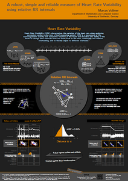

What's new?
19 January 2017
The new Version 0.97 is online. You can install the App for Matlab.
Whats new: You are now able to read the ECG from '*.wav' files which are generated from Hexoskin products using the binary file export (explanation on Hexoskin support website).
29 June 2016
The new Version 0.96 is online. You can install the App for Matlab.
Whats new: The application runs with its basic parts independently from additional Matlab Toolboxes. That's why we have created some helper functions which are stored in the class HRV.m. Many thanks to Stefan Frenzel who forced this change and who has written the most helper functions.
01 June 2016
The new Version 0.95 is online.
Whats new: You can now load long term raw data (24h-ECGs). An additional beat annotation file can be loaded additionally. Otherwise the integrated heart beat detector will do the annotation for you (on basis of 5 minute segements of your raw data to save memory). In this case you will be asked for the waveform type (Human ECG, Human Pulsatile or Rat ECG). "Fast" settings uses a downsampling step. Other waveform types can be added and parameter settings can be changed manually in order to improve the heart beat detection. The annotation file can be saved separetely. According to the analysis of long term data you are able to type the local period in another format: "00:03:00..00:03:30" (HH:MM:SS..HH:MM:SS) in addition to "180:210" (SS:SS).
31 August 2015
The new Version 0.94 is online. You can install the App for Matlab.
We are working on standalone applications for Mac OS X, Linux an Windows 64bit. Please be patient.
HRV - what?
Heart Rate Variability (HRV) characterizes the variation of the heart rate when analyzing successive cardiac cycles over a fixed measuring period. HRV is a measurand of the neurovegetative activity and autonomic function of the heart and describes the ability of the heart to change time intervals from one heart beat to the next, continually and without overloading, and to flexibly adjust to different overloads.
We use a measurand which uses relative RR intervals. Detailed information in the paper or poster:

HRVTool - MATLAB based analyzing software?
HRVTool is a application for Matlab R2014b or later releases. It is made for scientist and others who wants to get know about their Heart Rate Variability. You need just a valid version of Matlab.

User manual
Support or Contact
Having trouble with HRVTool? Check out the documentation or contact marcus.vollmer@uni-greifswald.de and we´ll help you.
Check out my GitHub profile (@MarcusVollmer) or my home page at the Department of Mathematics and Computer Science (University of Greifswald).